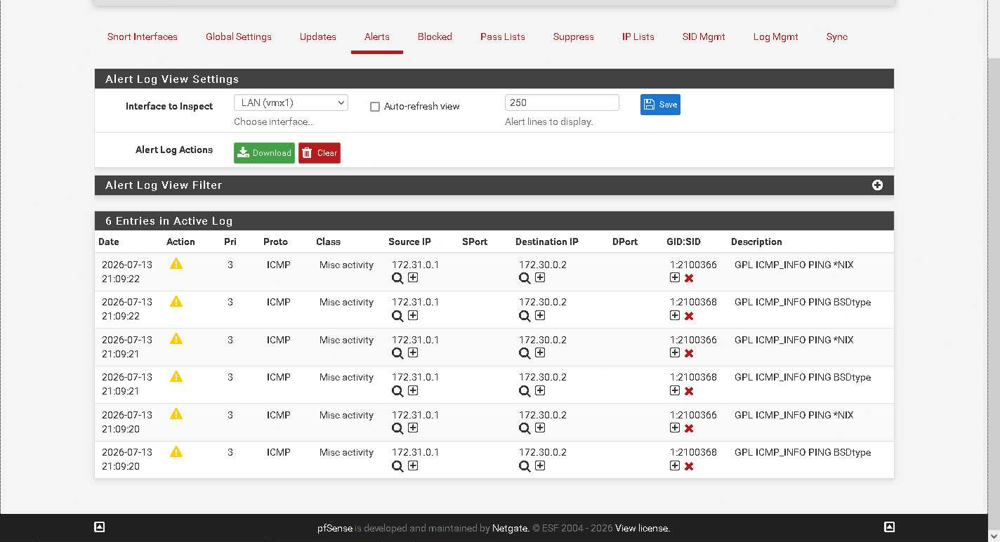
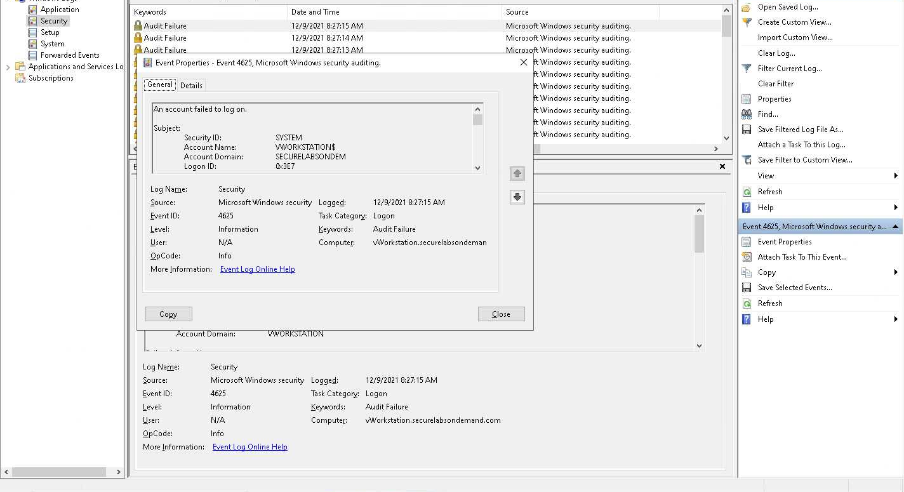
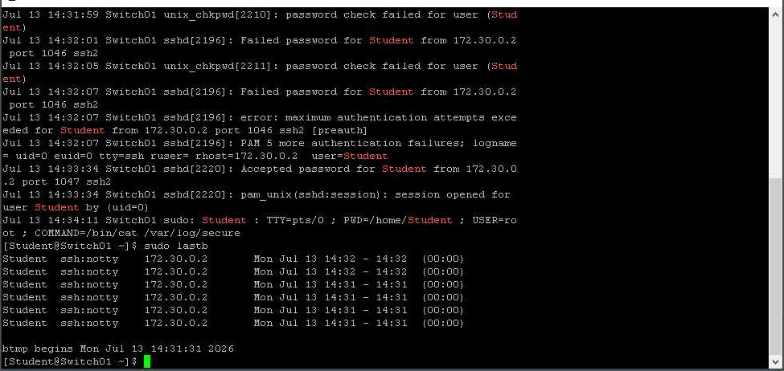
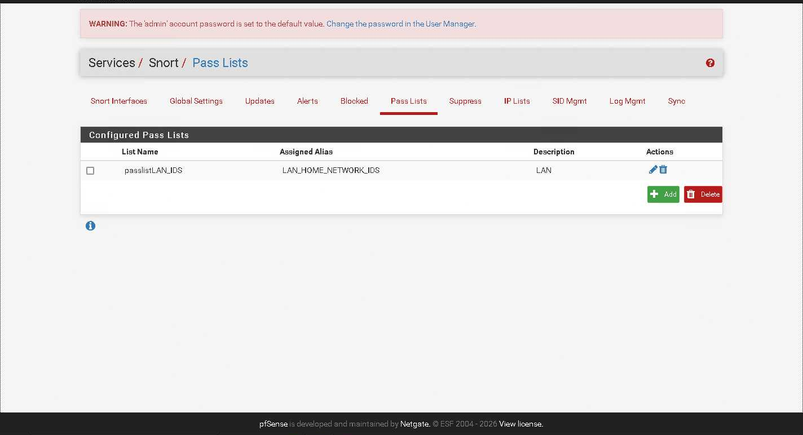
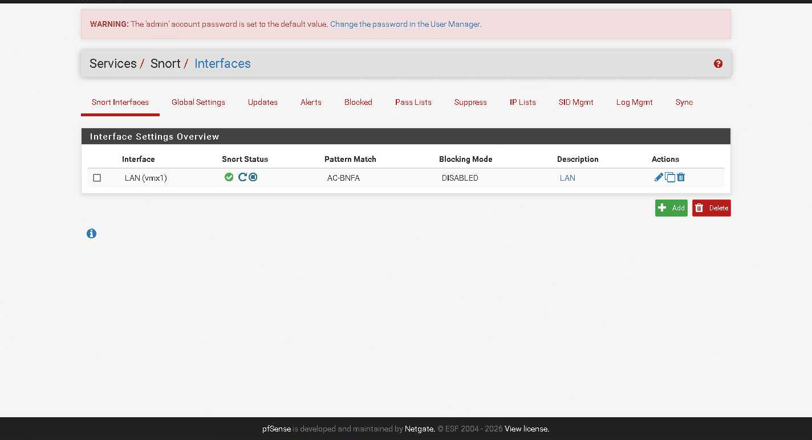
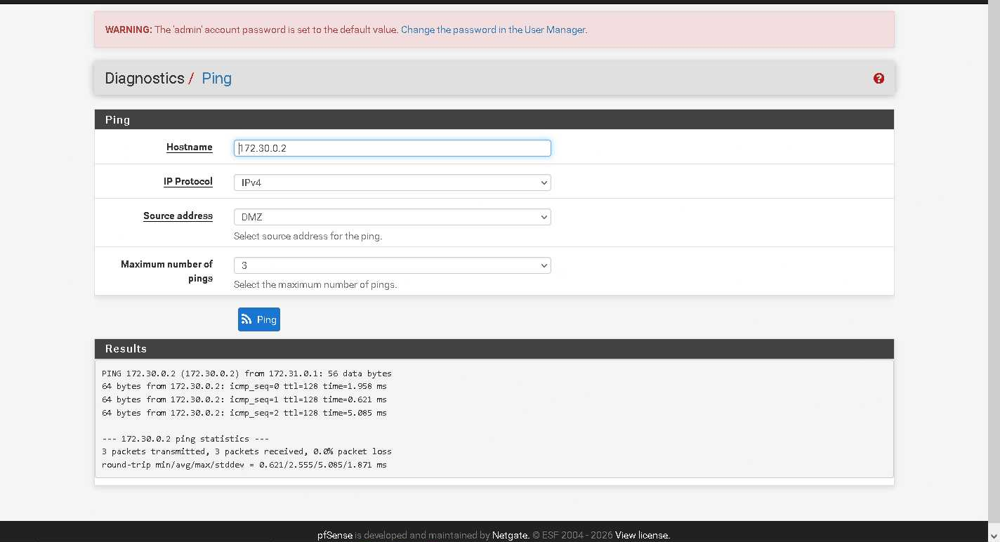
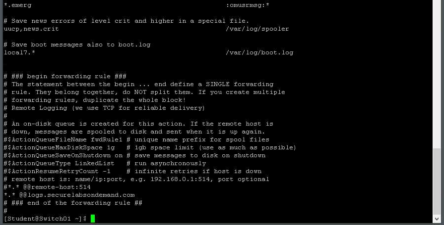
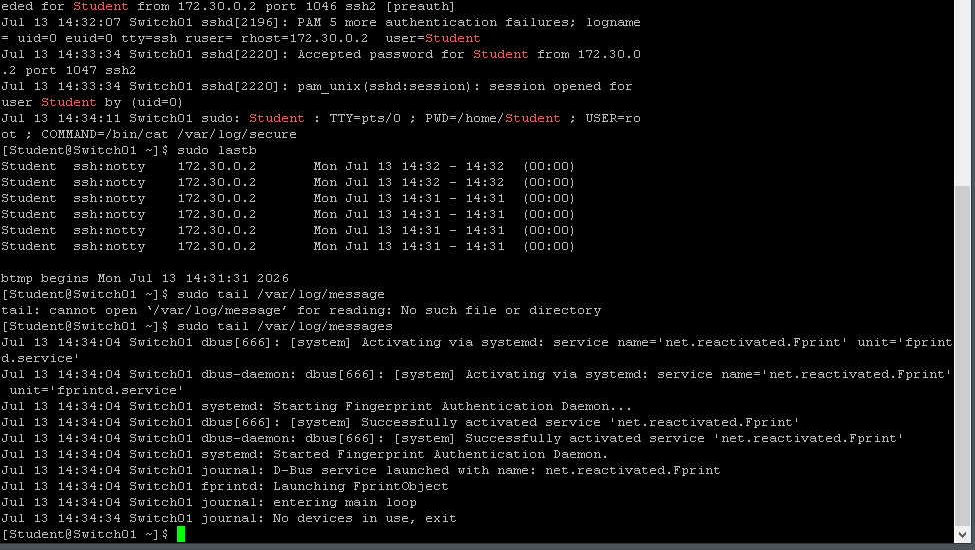
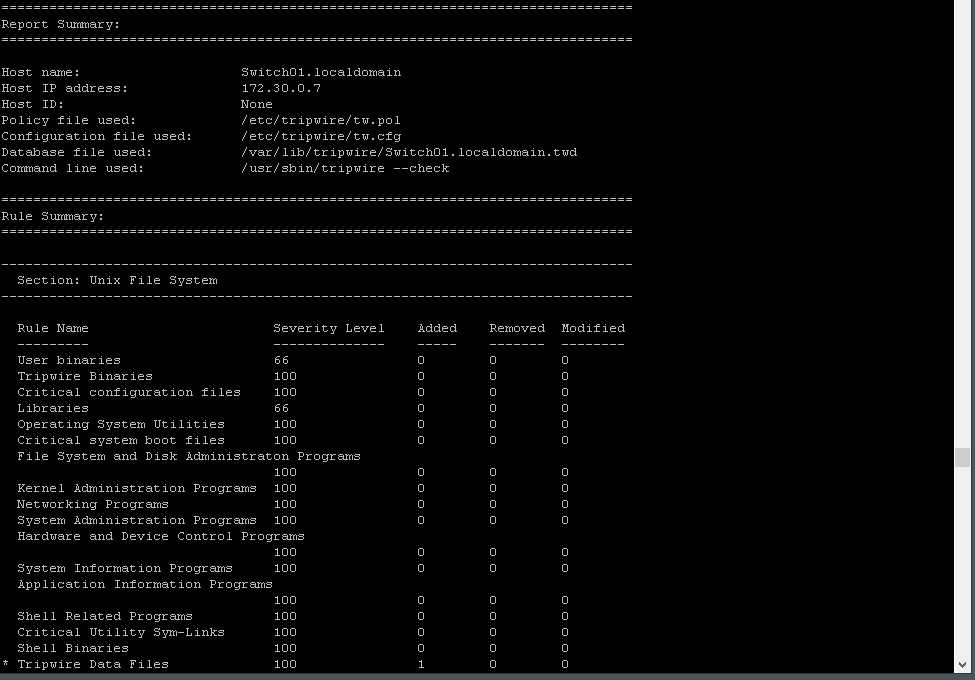

Case study 002 · Security monitoring
Security Monitoring
& Log Analysis
Hands-on review of authentication events, network-monitoring alerts, centralized Linux logging, and file-integrity reporting across Windows, pfSense, and Linux systems.

Snort’s active log recorded six ICMP monitoring alerts generated by controlled ping traffic.
Observe security-relevant activity across host, network, log, and file-integrity sources.
The completed portions of the lab examined failed authentication on Windows and Linux, configured and validated Snort network monitoring, reviewed Linux log forwarding and local log output, and inspected a Tripwire integrity report. The challenge exercises shown as incomplete in the source report are outside this case study’s scope.
How are failed Windows and Linux logons represented in system records?
Can controlled ICMP traffic be generated and observed in Snort?
How is Linux logging configured for remote forwarding and local review?
What does the Tripwire report show about monitored file categories?
Generate known activity, inspect its records, and validate monitoring output.
- 01
Review Windows authentication failures
Filtered the Windows Security log and opened an Event ID 4625 audit-failure record.
- 02
Validate Snort configuration
Reviewed the LAN pass list and confirmed Snort’s active status on the LAN interface.
- 03
Generate observable network traffic
Sent three ICMP echo requests from the DMZ source and confirmed successful replies.
- 04
Inspect network alerts
Reviewed Snort’s active log for the ICMP events generated by the controlled test.
- 05
Review Linux logging
Examined
rsyslogforwarding configuration, failed SSH authentication records, login history, and recent messages. - 06
Check file-integrity reporting
Reviewed Tripwire’s report summary and visible object-category counts.

Event Viewer identified a failed account logon as Security Event ID 4625.

Linux authentication records showed failed password attempts, the source address, and subsequent login history.
Event ID 4625 documented an account logon failure.
The Windows Security log was filtered for failed logons. The opened event identified Event ID 4625, the “Audit Failure” keyword, the Logon task category, and the message “An account failed to log on.” The filtered view displayed 54 matching events in the lab system.
The event record supplied both a consistent event identifier and contextual fields for reviewing repeated authentication failures.
The event properties dialog provided the event ID, source, audit keyword, and failed-logon description.
Snort was active on LAN with a defined pass list and blocking disabled.
The pfSense Snort pages showed a configured LAN pass list named passlistLAN_IDS, assigned to LAN_HOME_NETWORK_IDS. The interface overview showed Snort active on LAN (vmx1), using AC-BNFA pattern matching. The blocking-mode field was explicitly shown as disabled, so the evidence supports monitoring and alerting—not intrusion prevention.
Snort status displayed as active.
Shown in the interface settings overview.
No IPS blocking claim is made.

The configured pass list associated the LAN alias with Snort monitoring.

The interface overview confirmed active monitoring and disabled blocking mode.
Controlled ping traffic produced successful replies and corresponding alerts.
Three IPv4 ping requests were sent to 172.30.0.2 using the DMZ source address. All three replies were received with 0% packet loss. Snort then displayed six ICMP entries in its active log, with traffic from 172.31.0.1 to 172.30.0.2 and descriptions for ICMP information ping activity.
Three packets transmitted and received.
The controlled connectivity test succeeded.
ICMP events appeared in the active log.

The DMZ-sourced test returned three replies with no loss.
Snort recorded the test traffic as ICMP information alerts.
Linux records connected forwarding configuration to authentication and system activity.
The rsyslog.conf view showed a forwarding rule using TCP delivery to the lab log host. Authentication records showed failed passwords for the Student account from 172.30.0.2, a maximum-authentication-attempts message, and a later accepted password. The login-history output listed the failed attempts, while the recent-message review displayed local system activity.

The forwarding rule used the double-@ TCP syntax for the lab log destination.
Authentication and login-history records preserved failed-attempt context.

Recent messages showed local services and system activity after the authentication review.
Tripwire summarized monitored objects by rule and change type.
The Tripwire check displayed the report, rule, and object summaries for the Linux host. Across the visible object categories, removed and modified counts were zero. The visible summary showed one added item under Tripwire data files, while the other displayed categories showed no additions.

The object summary organized integrity results by monitored category and change type.
The lab demonstrated complementary monitoring at four layers.
Windows Event Viewer and Linux authentication logs documented host access failures. Snort observed known ICMP traffic at the network layer while remaining in non-blocking mode. rsyslog showed how Linux messages could be forwarded and reviewed, and Tripwire summarized file-integrity state. Together, the completed exercises demonstrated how analysts validate activity against the records produced by each monitoring source.